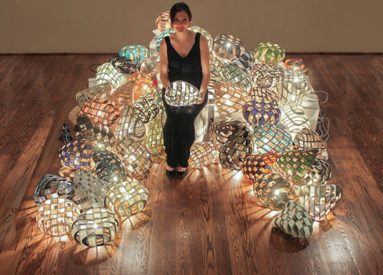
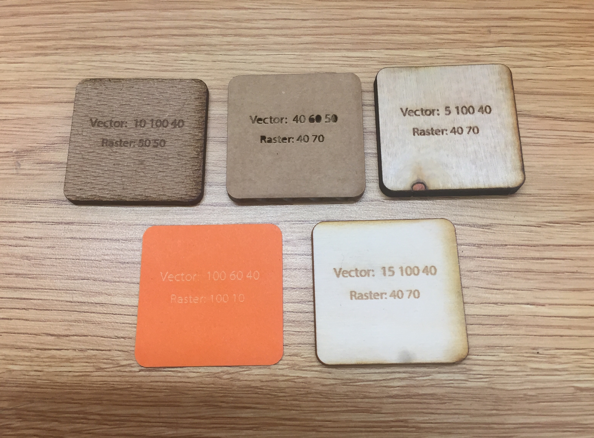

Week Two
Laser Cutting
This week was all about learning the basics of the laser cutter. We had two products by the end of the week to show what we had learned. The first was 5 swatches of various materials with the vector and raster settings printed (rastered) on the surface. Second is a living hinge box with our names printed on at least one surface.
1. Training
The first step this week was being trained on the laser cutter by the wonderful, perfect, and absolutely incredible Madison Dunaway (any accusations of brown-nosing will be denied). This training was completed during the prior week.
2. Swatches
At the beginning of the week I made a template for the material swatches on Illistrator. The template only needed to have the corret rastor and vector settings added for whatever materials I would end up needing. With the help of the student employees in the Makers Space, I began to print my 5 swatches, choosing to print on cardboard, paper, 1/4 and 1/8 inch plywood, and fiberboard. The text for rastering (the only change in the template between swatches) was made using layers. This allows for only one template file to be needed. You hide all the layers that are not currently not being printed, then switch to print the next swatch. The file for these swatches can be found by downloading the folder containing the design files for all of this weeks projects.
3. Using the Laser Cutter
Safety is key when using the laser printer. Before even sending your print from the epilog application to the printer, we must make sure the laster is safe to use.
First, turn on the compressor and exhaust systems. This should keep fumes from entering the workspace and reduce the risk of a fire (key thing to remember, FIRE! = bad).


Then turn on the laser printer and let it finish initializing

Now, using the control panel, set the table to the correct height for your print using the hanging triangle as your guide. Then set the origin point of your print (the laser showing the origin didn't show up in my photo, sorry. My phone has already been informed of its failure and has been punished in your glorious name).


Finally, send the print from the epilog application to the laser printer and start the print (again, using the control panel). Be prepared to have the first cut be a test cut, just in case the raster and vector setting were incorrect.


4. Final Swatches
Below are my final five swatches for this week.
5. Downloading a FlexBox Template
Select one of the styles of box from the template site we were given

Then adjust the settings to whatever your needs and inner desires may be. Then generate the template


Save the template as an .svg file. Then open that file within Illustrator


6. Finishing Touches
Now add any objects which will be rastered onto the surface of the box. For example, I added my signature to the back of my box, and my personal coin collection's watermark is on either side. You can see these in the attached folder with design files.
I then split my template across multiple pages. This helped make sure that my print fit within the plywood sections that we had in the shop. It also allowed for the first print to be a test print, ensuring that my vector and raster settings were correct and making sure that my box sections fit together correctly.
7. Final Box
The pictures below show my final flexbox.


8. Design Files
Download Design Files